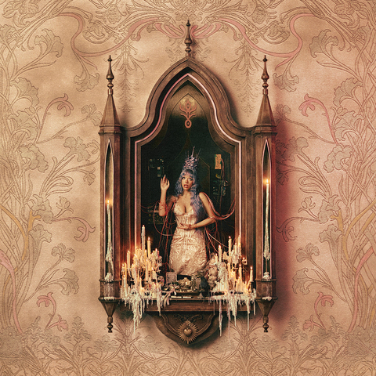

Meu primeiro postizinho!
Meu primeiro postizinho!
Por Bebezoca, Gabriela Braga
OIIIINNN, welcome to my blog! Aqui irei falarzinho da Melanie Martinez e sobre suas músicas, albuns e EPS.
Meu primeiro postizinho!
Por Bebezoca, Gabriela Braga
OIIIINNN, welcome to my blog! Aqui irei falarzinho da Melanie Martinez e sobre suas músicas, albuns e EPS.Por Bebezoca, Gabriela Braga
O Impacto da Cantora Melanie Martinez na Música Pop se reflete em uma base de fãs muito dedicada que se enxerga nas metáforas de crescimento e superação.
Por Bebezoca, Gabriela Braga
O Suas músicas estouraram por usar metáforas infantis para falar abertamente sobre abuso familiar, cirurgias plásticas por pressão social e relacionamentos tóxicos..
Por Bebezoca, Gabriela Braga
O Melanie chocou os jurados ao fazer um cover em versão indie/jazz de "Toxic", da Britney Spears. Enquanto cantava com sua voz sussurrada característica, ela tocava violão e um pandeiro com os pés ao mesmo tempo.

Por Bebezoca, Gabriela Braga
O Diferente dos discos antigos, que usavam metáforas infantis ou místicas, faixas do álbum abordam a realidade de forma muito explícita. O maior exemplo é a música THE VATICAN, que viralizou cercada de polêmicas por suas críticas abertas à religião, ao patriarcado e às estruturas tradicionais de poder. [1] (https://www.letras.mus.br/noticias/melanie-martinez-viraliza-com-the-vatican-faixa-polemica-do-novo-album-hades-pt/)